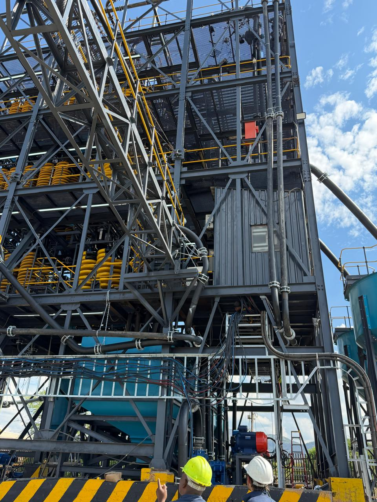
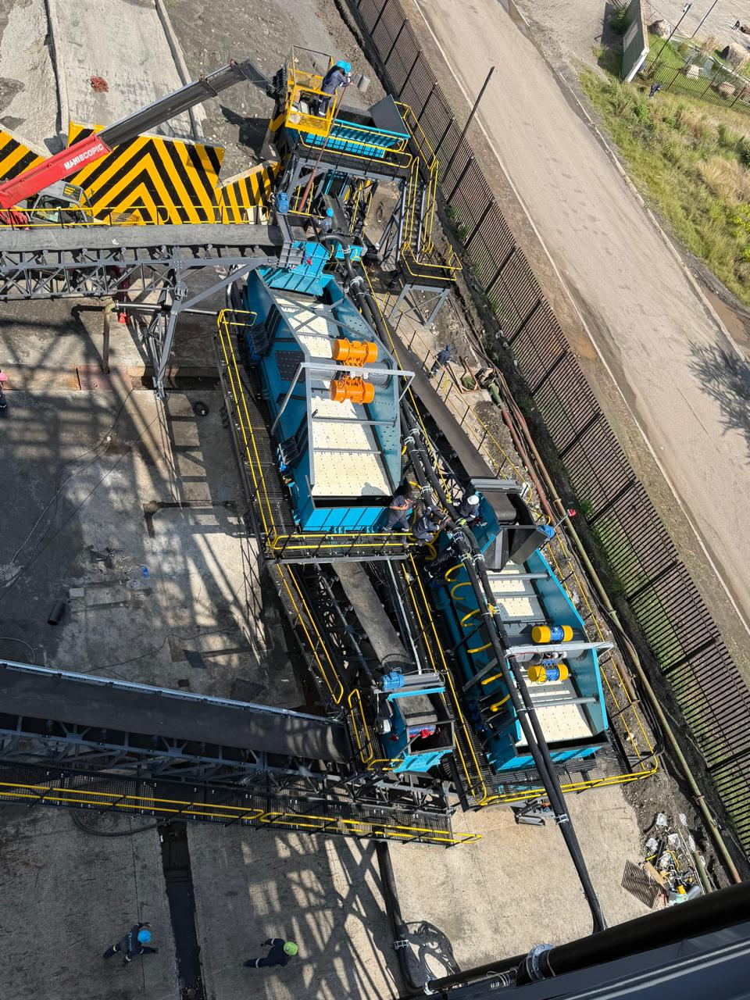
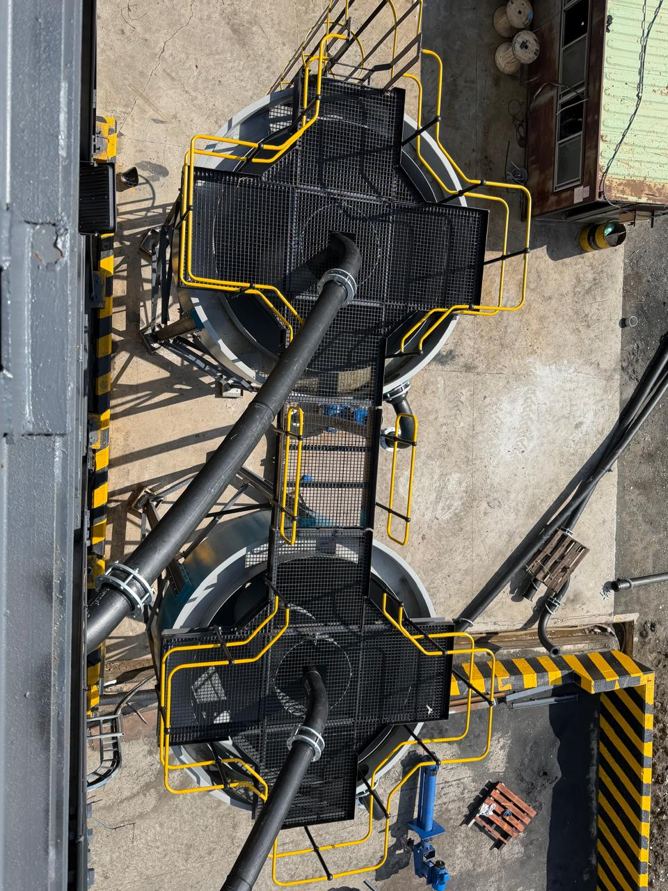
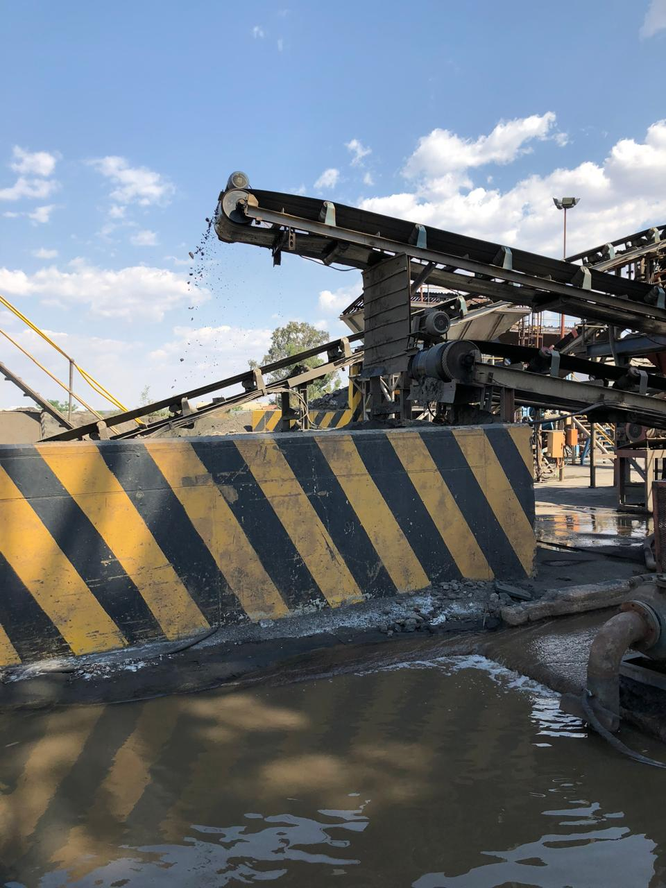
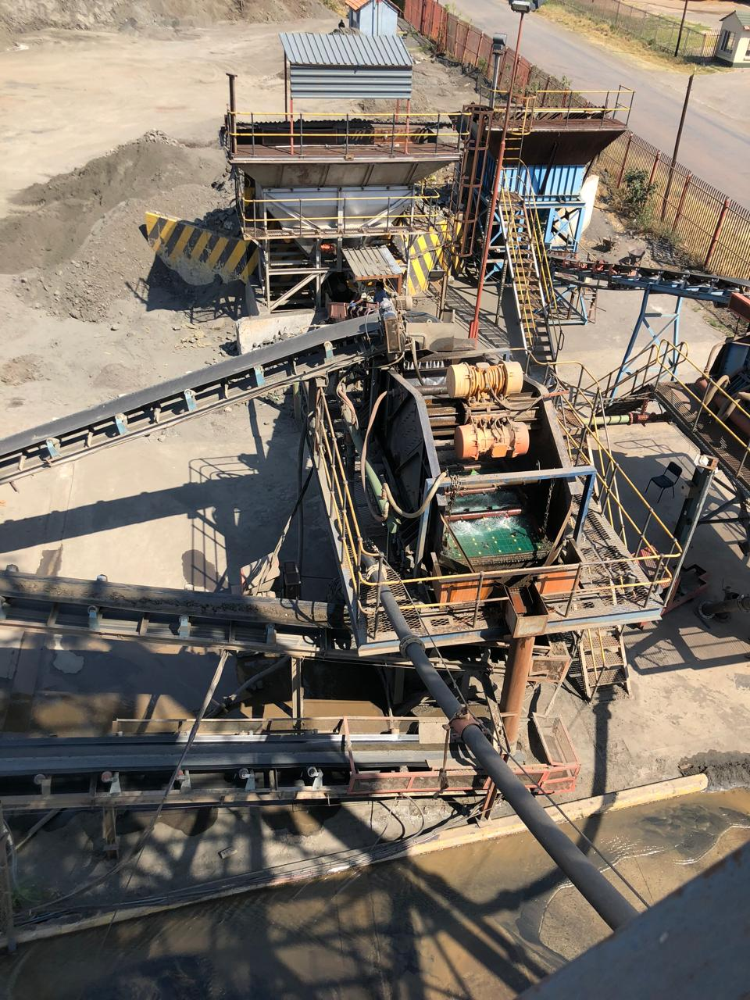

Plant Expansion
The New Infrastructure
The 2026 washplant upgrade introduced new spiral separator banks, updated screening decks, and enhanced water management systems.





Rustenburg Chrome Wash Plant
Upgraded spiral separator technology. 80,000 tonnes per month. Consistently superior chrome concentrate for global Ferro chrome markets.
In 2018, VK Chrome (Pty) Ltd forged a strategic alliance with Ferro Chrome Furnaces (Pty) Ltd, securing the lease and operational rights of the Rustenburg Washplant. This pivotal move positioned VK Chrome as the primary operator of one of the region's most significant chrome processing facilities.
The Wash Plant stands as a testament to engineering ingenuity and operational excellence. Following recent expansion investment, the facility now processes up to 80,000 tonnes of chrome sweepings and/or tailings per month through a multi-stage gravity separation circuit.
VK Chrome is actively pursuing full acquisition of the Wash Plant, further cementing its long-term position in the chrome processing landscape.
A proven multi-stage gravity separation process that consistently delivers high-purity chrome concentrate.
Chrome sweepings and tailings received via conveyor systems from mine sites and processing facilities.
Material is scrubbed, sized, and classified to remove gangue minerals and prepare feed for concentration.
Upgraded multi-turn spiral separators use gravity and fluid dynamics to concentrate chrome by density differential.
Chrome concentrate is dewatered, sampled, and stockpiled to customer specifications ready for dispatch.
The 2026 washplant upgrade introduced new spiral separator banks, updated screening decks, and enhanced water management systems.



The original processing circuit — conveyors, wash pools, chrome concentrate output — the foundation of VK Chrome's operational capability.




Enquire about supply agreements, tolling arrangements, or site visits. Our team is ready to discuss your requirements.
Enquire Now